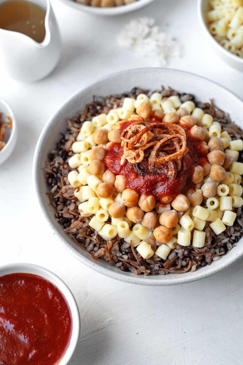

Koshary Recipe:

Koshary is a traditional egyptian dish consisting of 1 or 2 kinds of macaroni, Some fried onions, Some rice, Some chicpeas, Tomato sauce, Ditalini and lentils, It may sound like a weird mix to you but you can't judge it before you try it
Ingredients:
- 16 oz canned chickpeas (rinsed and drained (or homemade))
- 12 oz ditalini (cooked according to package instructions)
Fried Onions:
- 3 large onions (sliced thin into rings)
- 3 tsp kosher salt
- 1 1/2 tbsp cornstarch
- Vegetable oil for frying
Tomato Sauce:
- 2 tbsp fried onions
- 1 tbsp reserved vegetable oil
- 6 cloves crushed garlic
- 6 oz tomato paste
- 15 oz tomato sauce
- 3 cups water
- salt and pepper to taste
- 3 tbsp white vinegar
- cayenne pepper (optional)
Rice and Lentils:
- 2 tbsp reserved oil
- 1/3 cup fried onions
- 2 cups brown lentils (rinsed and drained)
- 2 cups short grain rice (rinsed and drained)
- 1 cup toasted vermicelli
- 4 cups water
- 2 cups HOT water
- ground cumin (optional)
Instructions:
Fried Onions:
- Slice onions thin. Sprinkle salt and cornstarch. Toss together.
- Add vegetable oil to a large deep pan to cover the bottom by 1-inch. Fry at 350 degree F. stirring every now and then, onions should be nice and golden brown, Approximately 10-12 minutes. Reserve oil!
- Line a plate with a paper towel. Add onions in a single layer and let drain on the paper towel. Set aside to harden.
Tomato Sauce:
- In a saucepan on medium heat add oil, and garlic. Sautè until fragrant. approximately 1-2 minutes. Be careful not to burn the garlic!
- Add onions, tomato sauce, tomato paste, water, salt and pepper. Bring to a boil, reduce heat to medium-low and cover, let simmer for 15 minutes.
Rice and Lentils:
- In an enameled dutch oven or heavy pot on medium high heat, add oil with the fried onions, lentils, and 1 tbsp salt. Stir for 1-2 minutes. Add 4 cups water and bring to a boil. Keep heat on medium high, (it should be a gentle boil) for approximately 12-15 minutes or until the lentils are al-dente. *DO NOT DRAIN WATER.
- Stir in rice, vermicelli, hot water, and additional tablespoon salt.(Option to add Cumin*) Bring to a boil, cover and reduce heat low for 12-15 minutes or until pasta is tender. Fluff with a fork.
Assembly:
Koshary is all about the layering! Add the rice with lentil mixture as the base, top with cooked pasta, chickpeas, and fried onions. Drizzle with tomato sauce.